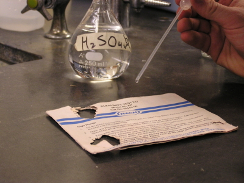
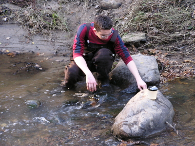
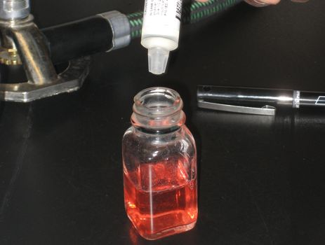
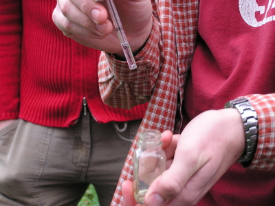

CHEMISTRY ANALYSIS
Water Chemistry Analysis evaluates the condition of the water at the Arcade Creek, chiefly the ability of the creek to support life and maintain a healthy ecosystem for organisms. In this study, members collect monthly water samples from both a riffle and a pool at each site transect of the Arcade Creek.
Chemistry Students
Students in the lab.

Sulfuric Acid
testing the effects on paper
Chemistry Students
sampling at the creek
Chemistry Students
testing chemicals
Chemistry Students
performing a test on the water
Both at the creek and back in the lab, a battery of tests is conducted on the water samples to determine the levels of various chemicals found in the creek at each site.
Approximately seven indicators of the health of the creek are monitored over the course of the year, including the abundance of Chlorine, Phosphates, Nitrates, and Dissolved Oxygen in the water. By collectively analyzing the results of these monthly data collections, a detailed picture of the condition of the Arcade Creek is formed. Often, fluctuations in results can indicate the presence of external influences upon the creek, ranging from human-based pollution to environmental factors. Secondarily, the study can examine the long-term effects of occurrences around the area of the creek, such as construction, through these tests. In order to determine trends and patterns in the health of the creek, the study takes another step by further assessing the year's data in conjunction with almost a decade's worth of stored data. Over this period of time, the Water Chemistry Analysis study has effectively monitored the Arcade Creek and provided consistent indicators of its health.
STUDY FILES:
Chemistry ProtocolChemistry Data: December 1999 - May 2000
Chemistry Data: October 2000 - January 2002
Chemistry Data: February 2002 - December 2005
Chemistry Data: October 2006 - May 2007
Chemistry Data: October 2007 - May 2008
Chemistry Data: October 2009 - April 2010
Chemistry Data: 2008 - 2009
Chemistry Data: 2011-2012